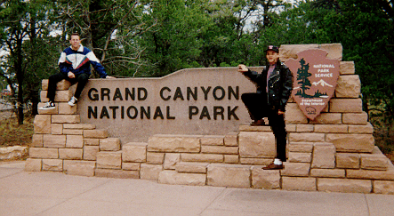

| (Even though I live in Atlanta, the trip officially started and ended at LaFayette Square in Anthony's home of LaGrange, Georgia, which we left after dinner on Thursday, September 12, 1996. Anthony originally wanted to put a silver high-heel shoe on top of the car, à la Priscilla - but by the day of the trip it was clear that we lacked the time and mechanical knowledge to make it happen. In a profound temptation of fate, I mailed the last payment on the car note the afternoon of the day we left. | ||||
| 1 | As we crossed the high bridge just outside New Orleans, Anthony looked down at the lights of the city and the Mississippi River bridges, exclaiming, "Oh my God, that's so beautiful." It was a phrase we would both repeat endless times in various combinations over the next two weeks. | |||
| 2 | We spent the night in New Orleans and went out that evening to Oz (where Anthony had hoped to enter an underwear contest that never got organized and where I flirted endlessly with the upstairs bartender) and Parade (where we watched a pretty cool drag show). Before leaving New Orleans the next morning, I wanted to show Anthony one of my favorite restaurants in the world: Café du Monde, a 24-hour eatery that is internationally famous for delicious beignets (square doughnuts without holes, and topped with powdered sugar). Anthony thought he would be able to indulge my obsession for the things, and could get a different breakfast item for himself, but discovered when we got there that the only items on the menu are (1) beignets, (2) cokes, (3) chicory coffee, and (4) milk. He finally turned to me and said, "I should have mentioned this, but I hate doughnuts." We took a quick tour past the mansions and streetcar line of St Charles Avenue, and then headed farther west than either of us had ever driven before. | |||
| 3 | Driving west from New Orleans toward Baton Rouge, we
passed the most water-filled place I've ever seen: The expressway was on bridges more
often than it touched ground. Despite the incredible beauty of this roadway, it made me
even more eager to see the desert; I had seen water all my life. Creeks: As we got farther west, we noticed that there was considerable linguistic diversity over what we in Georgia call creeks; here they were called "bayous." |
|||
| 4 | At the Louisiana/Texas border, we had a run-in with love bugs, a lower South phenonmenon which has gone through millions of years of evolution just to gunk up windshields. A virtually infinite number of flying beetles are driven to distraction by to their September mating ritual. which takes place at about windshield level (because the critters are humping [literally] in mid-air) directly above the roadways (as they seem to be attracted to the heat). To compound the problem, they have an incredibly-sticky blood which virtually cements them to the windshield glass and/or hood as soon as they are struck by it. We tried to get a picture of mile marker 880, but it didn't come out. | |||
| 5 | We skipped on seeing the Alamo in San Antonio because we didn't want to spend the night - but coming out of that city, we did see the coolest expressway of the trip. I-10 was funnelled into a giant concrete gorge with two lanes in each direction in the pit, and two more lanes in each direction on serpentine bridges above. The signs only indicated "I-10 West Upper" and "I-10 West Lower"; it seemed like an important decision, but I didn't have enough information to make it (so I dived toward "Lower" because I figured it was more likely to have exits, if I needed one). | |||
| 6 | We got exhausted driving through Texas and ill-advisedly pulled into the first hotel
we saw, just east of the town of Junction. It was a Best Western, and at
$55/night seemed a bit high (although, by the end of the trip, I would have jumped at
it). When I said I would keep looking, the hotel clerk told me that he could rent me
a room in the hotel next door (Red Flag #1). He said the Best Western was
permitted to rent out the best room in that hotel (Red Flag #2) for $35/night (Red
Flag #3) because the owner of that hotel stayed at the Best Western (Big Red Flag
#4) insofar as he refused to sleep in his own establishment (Huge, Huge Red Flag
#5). My senses dulled from the long Texas drive, I said okay. At first we thought it
was cool that there was a traveling circus parked outside the room. Then, after about 20
seconds, we noticed the fleas with which the room was infested. To add insult to injury,
the bath mat was a piece of 11"x17" cardstock with fish printed on it. Having
arrived there in the middle of the night, Anthony and I were convinced that we must have
driven far enough to be in the desert, finally. We were disappointed to wake up and see
scrubby bushes covering the landscape. Highway Markers: Texas state highway markers were unusual in that in addition to the standard route number, there were also FM ("Farm to Market") and RR ("Ranch Road") numbers. |
|||
| 7 | Having turned north toward Pecos, we failed to join the club of people who have driven
I-10 for its entire 880 Texas miles. And unfortunately, we left there without buying
anything shaped like Texas. (This had been one of the goals of my trip: to get a party
platter, clock, or toilet seat in the form of that familiar Texas outline.) In a stroke of
luck, however, we got to Carlsbad Caverns National Park (passing signs for places with
names such as "Slaughter Canyon Cave" and "Rattlesnake Springs Recreation
Area") just before the last tour ended (which put us a day ahead of
schedule!). Drizzly weather threatened the bat flight - wherein several hundred
thousand bats emerge from the caverns at sunset - but the skies cleared just in time and
we saw the bats make their exit. Creeks: Here the creeks were called "washes." |
|||
| 8 | We hit a torrential downpour in Roswell, New Mexico - and I found it aggravating that my first experience of the desert, which I had looked forward to all my life, was marked by cold and rain. We tried to sleep in the car just north of Roswell (after the rain ended), but got afraid of space aliens and kept driving. This was the darkest night I have ever seen. It was also our only experience with the Llano Estacado, which in English means "staked plain." It is a plain so vast and featureless that the Spanish explorers had to drive stakes into the earth in order to find their way back - like latter-day Hansels and Gretels. I wish we had been able to see it during the day, but even at night the enormous distances we could view across the landscape were amazing to behold. | |||
| 9 | We finally slept, the third night, in Albuquerque, New Mexico, where
we began implementing our successful plan of inspecting the room before signing the credit
card slip. Albuquerque had the coolest interstate sign supports of any city we passed
through: Giant curved-L, coral-colored pieces of concrete. New Mexico provided our first
encounter with ranches that crossed the road - with cattle guards literally across the
highway to keep the animals sorted; we were astonished by this at first, but over the next
ten days these cattle guards became routine. Curiously, for all the cattle guards we
traversed, we never saw a cow. Highway Markers: New Mexico had the best state highway markers. |
|||
| 10 | In Mesa
Verde National Park we saw the Cliff Dwellings and developed what I'm sure will turn
into a lifelong hatred of Winnebagoes. Near here, we saw the only wreck of the trip (an
overturned Winnebago, of course) and our first view of snow-covered mountains. Highway Markers: Colorado had interesting state highway markers - with the flag of Colorado covering half of it Pronunciation: I found it interesting that at least one radio deejay felt compelled to remind travelers that the "a" in Colorado is pronounced as in "had." Creeks: Here the creeks were called "draws" - although the rivers looked a lot like what I had always called creeks. |
|||
| 11 | Just after crossing over US 666 (!), we stood in Arizona, Colorado, New Mexico, and Utah all at one time, at Four Corners. | |||
| 12 | In the Painted Desert (on the Navaho Reservation), we finally got the car to 100 mph for the first time and ... | |||
| 13 | ... climbed a huge rock, from which Anthony fell and pulled a leg muscle. Creeks: Here there were no creeks. |
|||
| 14 | We stayed the fourth night in Flagstaff, Arizona, a beautiful city filled with the friendliest people we encountered anywhere on this trip as well as ... | |||
| 15 | ... a gorgeous national forest that we passed through on the way to the Grand Canyon National Park. | |||
| 16 | After seeing the Grand Canyon - and not having enough time to explore it, but not being ready to leave it - we (ignored warnings of environmental disaster and) took one of the charter flights over the gorge. Another club we failed to join (although it has long been on my list) is the Mile High Club; the back seat of the Cesna would have provided very ample privacy - but in contrast to that view, sex never crossed my mind. | |||
| 17 | We crossed Hoover Dam - which was so enormous that my eye couldn't perceive how huge it was without visually comparing it with the buildings and people on top (it's spillway was big enough for an average-sized apartment building to wash down). We got out and walked around, but unfortunately, the new visitors' center was not open. | |||
| 18 | We spent the fifth night in Las Vegas at Circus, Circus: the best hotel room of the trip. Anthony and I both have a thing for roller coasters - and this hotel had an amusement park, with a cool roller coaster, inside it; we also played several games of Laser Tag in there. We explored a few of the casinos in Las Vegas (especially the Mirage and Treasure Island) but Anthony's leg was hurting too much from the fall off the rock for us to do too much walking. The next morning we stopped at Stratosphere to ride the Big Shot reverse bungee jump - but unfortunately, the Let It Ride High Roller roller coaster was out of commission that day. Las Vegas is the one place on the entire trip that I really want to see again. | |||
| 19 | Anthony and I decided that we had seen enough desert, so we skipped a side trip to Death Valley. This turned out to be an excellent decision because at the Nevada/California border we rode the amazing Desperado roller coaster at Buffalo Bill's casino. An added bonus was that from the roller coaster we were able to see an entire train, from engine to caboose, on the desert plain - something neither of us, having grown up in the forested hills of Georgia, had ever seen before. | |||
| 20 | Then we passed through the Mojave Desert, which was the only place we saw where plants did not grow. | |||
| 21 | We stayed the sixth and seventh nights in Los Angeles (where they had rainbow flags flying in the median of Santa Monica Boulevard!) and did almost nothing there, except ... | |||
| 22 | ... we visited the lesbian and gay bookstore and ... | |||
| 23 | ... we did go to Venice Beach (having heard it was a nude beach, although it wasn't) and ... | |||
| 24 | ... I went to Beit Hashoah, the Museum of Tolerance (while Anthony did laundry and got drunk, bless
his heart). Driving through L.A., we kept being approached in traffic by gay expatriate Southerners who would see my Georgia tag and my pro-gay bumper stickers, asking us how Atlanta had changed since they left and even giving us messages for friends back home. Also, although they were polite about it, some of the Los Angelinos seemed to think that my question about what county contained San Luis Obispo was odd (answer: San Luis Obispo county); apparently California's system of naming counties is more sensible than Georgia's. |
|||
| 25 | On our way out of L.A., we took bezillions of roller coaster rides at Six Flags Magic Mountain and also rode the Dive Devil (wherein we were pulled up 150 feet in the air, instructed to pull a cord, and went swinging within six feet of the ground). They accidently gave our video of the event to another set of people, so Anthony finagled a second ride from them by insisting that he wanted a video record of the event. | |||
| 26 | We spent the eighth night at Morro Bay, California and paid extra for a view of the Morro Rock, which we could barely see because of the unrelenting fog. This hotel did, however, have a whirlpool, which we loved - and we spent the rest of the trip looking for hotels that had them. | |||
| 27 | From Morro Bay up to Monterey, we drove the California coastal highway, which is supposed to be beautiful - but all we saw was fog and Winnebagoes. There we encountered the most expensive gas: $2.099/gallon. The gas extortionist coldly informed me that we could put the gas on credit "if we absolutely had to," but that snacks would have to be paid for in cash. | |||
| 28 | Finally, as soon as we were able, we turned off the coastal highway toward San Jose, California, where we visited the Winchester Mystery House. This is an amazing maze-like dwelling with no shortage of architectural curiosities (like hidden passageways and windows in the floor). Then we continued on through some of the worst traffic I had ever seen (at least until the next day in San Francisco) to ... | |||
| 29 | ... Berkeley, California, where we spent the ninth and tenth nights in with my friend Dale. We toured San Francisco with him, my friend Michael, and Dale's ex-boyfriend, Jules - and found that if you aren't already in what they somewhat myopically refer to as "The City," it's gonna take you a couple of hours to get there. BART has insufficient parking, shuts down at midnight, and only serves the peninsula and the East Bay; the Bay Bridge is in the middle of a multi-decade construction project and has no bike lane; and the Golden Gate Bridge is actually the world's most ornate parking lot. | |||
| 30 | During the one full day that I was with Dale, he, Michael, Anthony, and I drove up to Calistoga, California to see the Petrified Forest ... | |||
| 31 | ... and the Old Faithful Geyser of California and then ... | |||
| 32 | ... we came back by Muir Woods to see the redwoods. This is where Anthony's nacent talent with the stick shift got its greatest test: on the winding road to Muir Woods, alongside cliffs without guard rails. Anthony did exceptionally well, even with the distraction of Dale and Michael's paranoid screaming. | |||
| 33 | We spent the eleventh night with Michael in San Rafael, California. | |||
| 34 |
... And, in Concord, California, to visit Anthony's great-aunt. |
|||
| 35 | We did, nonetheless, pass through Yosemite National Park, after climbing steep mountain roads which I feared would make my engine explode - if the car would even stay running long enough for that to happen insofar as it was running on about a thimblefull of gas. Almost immediately upon entering the park (after a fill-up) we got lost - luckily, for otherwise we would have missed the most beautiful of the terrain. We literally blundered by El Capitan. Yosemite was more spectacular than either of us had imagined (and was the only time we drove above the tree line), and then ... | |||
| 36 | ... we drove California 120 to the Nevada border. This leg of California 120 is the ultimate car commercial road, with pristine pavement, fun ripples, and gentle-yet-unnecessary curves. This is where we reached our top speed on the trip of 110 mph. | |||
| 37 | We slept the twelfth night in a tent just off the Extraterrestrial Highway (NV 375) - the only night we actually got to camp out. I think it was near the legendary black mailbox (where most alien sightings are supposed to occur), but I'm not sure, since I didn't learn of the black mailbox until after the trip was over. We didn't see any aliens, but Anthony (whose vision is much better than mine) saw some unusual airplanes. | |||
| 38 | On our way to Utah, we stopped in Pioche, Nevada and had a terrific
breakfast. An old man sitting on a bench there noticed my license tag and said,
"Well, well, two Georgia peaches just arrived on the scene." Later a woman there
told me she had been to Georgia once, but it was too wet here and she couldn't breathe.
(At that moment my dust-filled lungs were having the exact opposite problem with
the Nevada air.) After breakfast, the man was still there and he told us that on the
93-mile drive to Ely we would pass exactly two ranches; another man there added, "and
a prison!" Highway Markers: Nevada had cool signs warning motorists about virtually every variety of rampaging mammal; unlike in the other state's we passed through, the bull on Nevada's cattle crossing signs looked rabid and angry. |
|||
| 39 | Also, just north of Pioche, we met a tourist information person who corrected my pronunciations of just about every Nevada city on our drive (Tonopah was TO-no-pah not to-NO-pah, Pioche was was PEE-ohsh not pee-O-chay, Ely was EE-lee not EE-lye) and gave us lots of information about the region (e.g., Tonopah is from the Paiute words tono, meaning greasewood, and pah, meaning water, and effectively means "greasewood springs"). We passed a side road to Atlanta, Nevada, but (I now regret) didn't explore it or photograph it. The road to Ely was one of the most beautiful of the trip, lined for the entire drive with enormous mountains on either side. | |||
| 40 | When we got to Ely, Nevada, I put a single quarter in a slot machine at the gas station and $12 came out. | |||
| 41 | We finally made it to the salt flats of Utah, having driven entirely across rural
Nevada without having seen a single brothel! I had imagined that with the casinos being so
garish, the brothels would advertise as well - but I seem to have been incorrect. The salt
flats were beautiful from a distance as we descended from the Nevada mountains, but looked
kind of like dirty snow up close. Highway Markers: Utah had odd state highway markers; the number was superimposed on what Anthony (but not I) recognized as a beehive. (There were at least three varieties of this beehive design, but none of them impressed me as being particularly true-to-life.) |
|||
| 42 | At Temple Square in Salt Lake City we visited the Mormon Assembly Hall, the North and South Visitors' Centers, and the Seagull Monument, but we couldn't get into the Mormon Tabernacle because the choir was rehearsing for a recording -- and, of course, we couldn't enter the Temple because we weren't Mormon. We took pictures of its back side (which was beautiful) because it never crossed our minds that the front would face away from the square. Although a bit distant, the Mormons were reasonable friendly - even in light of my pro-gay t-shirt. Anthony was particularly impressed with a statue of Jesus surrounded by a mural of the cosmos, and he tried to sneak in between crowds of French and German tourists to take a picture of it; unfortunately, the cosmos part didn't show up in the photograph. | |||
| 43 | Driving South toward Provo, we saw skydivers landing beside the highway. | |||
| 44 | Unable to find a single empty hotel room in Moab, Utah, we drove down to Monticello to spend the thirteenth night, at a hotel directly across from a Sinclair gas station. In Georgia, these establishments are as extinct as the dinosaurs on their logo - but as a child I played with a Sinclair dinosaur set that my parents got at the local station, so I took a picture of it. This diversion to Monticello was fortuitous because it made us pass ... | |||
| 45 | ... Wilson Arch, satisfying my urge to see a natural bridge and allowing us to bypass the two-lane Winnebagoland that was Arches National Park. | |||
| 46 | Having made it this far without buying souvenirs (and fearful that if we returned home empty-handed, our heads would be mounted on poles at the city limit as a warning to other vacationers), we stopped at Hole N" The Rock, a gift shop carved out of the base of a cliff (with a sculpture of Teddy Roosevelt in the rock and the name of the store written in fifteen-foot-high letters across the cliff wall) and bought gifts. Hole N" The Rock must be a bit of an attraction: It appears on my AAA Utah map. | |||
| 47 | We took UT 128 along the Colorado River to the state line; at times the roadway ledge between the cliff wall and the river was so narrow that mile markers were embedded in the cliff rather than set upon stakes. This is where Anthony developed his philosophy of doubling the speed limit. | |||
| 48 | Approaching the Rockies, I-70 in Colorado continued alongside the Colorado River and was the most beautiful of all the interstate highways we traversed: The road was in the river gorge much of the time - and (along with a train track and the river itself) went through several criss-crosses, cantilevers, and tunnels. At times the canyon walls were so high and steep that we could not see the sky without leaning forward to look up through the windshield. | |||
| 49 | When we finally crossed the Rocky Mountains at the Eisenhower Tunnel, we had our first encounter with snow (in September!)... | |||
| 50 | ... and a buffalo herd (which must be a tourist attraction because it was mentioned prominently on an expressway exit sign). There was also a bike trail along the highway across the Rockies (and occasionally it merged onto the highway, itself). | |||
| 51 | We spent the fourteenth night in Colby, Kansas, having selected the
hotel because it had a whirlpool. We raced across Colorado to get there before the
whirlpool closed - but then found that it was occupied to capacity by a family that we
would have to chase out of it (they beat a hasty retreat after we started telling them
about our protests against Cobb County, where they had once lived, because of an anti-gay
resolution there). Finally we were left with an army captain who chatted with us
until the whirlpool closed, whereupon he stood up to reveal his exposed and semi-hard dick
and emphasized that it had been a pleasure meeting me. (He didn't get what he
wanted.) Highway Markers: Kansas state highway markers are numbers superimposed on a giant yellow sunflower. |
|||
| 52 | All the way across Kansas, we saw things reminding us that we proverbially "weren't in Kansas anymore" (yet - ironically - literally, we were): (1) Kansas had the aforementioned giant-yellow-sunflower highway markers. (2) Kansas is the only place I have ever visited where the expressway entrance signs explicitly prohibit cattle drives. (3) Every city along the highway in Kansas seems to have a billboard about 100 miles in advance of it that plays on the town's name and encourages travelers to plan their trips around a stop there to enjoy the amenities - such as a Shell station or a McDonald's! (Levenworth's sign had a prisoner and the caption said, "Do some time in Levenworth.") Swayed by one of these signs that promised us a Dairy Queen (which was nowhere near the expressway), we accidently found ourselves in Bob Dole's home town of Russell, Kansas, just prior to the 1996 election. This Dairy Queen was covered ceiling-to-floor with pictures of Bob Dole shaking hands with people; there every eye in the restaurant swung to my bumper stickers ("Pro-Choice," "Your Silence Will Not Protect You," "GAY," "End Racism," "Share the Road," "Go Vegetarian," and a rainbow hammer-and-sickle) and then watched Anthony and me warily throughout our meal. | |||
| 53 | We stayed the fifteenth night with my friend Rhonda in Kansas City, Missouri
and toured around that city with her. Highway Markers: Missouri has two sets of state highway markers - the regular ones with numbers on a state outline, and a secondary road system with letters on a square. For the latter, the route could be in discontiguous segments scattered throughout the state. |
|||
| 54 | On the way through St. Louis, Anthony heard an advertisement for a haunted house, so we drove through back areas of that city without a map looking for the intersection. Miraculously, we found it - and Eddie Munster was there! Also in St. Louis, we passed by Gateway Arch, which was 100 times more beautiful than I had ever imagined. It must be seen in person; no photograph does it justice. Unfortunately, we were traveling at night and it was closed. | |||
| 55 | We stayed the sixteenth and last night in Clarksville, Tennessee. | |||
| 56 | In Lynchburg, Tennessee we toured the Jack Daniels Distillery, coincidentally arriving on Jack Daniel's birthday; a celebration was going on in the town for the occasion. | |||
| 57 | We spent the seventeenth night in our respective beds, Anthony in LaGrange, Georgia, and me in Atlanta, Georgia. |
Travel Dates: September 12-28, 1996
Vehicle: 1992 Hyundai Excel
Bumper Stickers and Signs: 8
(Rear: "Pro-Choice," "Your Silence Will Not Protect You,"
"GAY," "End Racism," "Share the Road," "Go
Vegetarian," a rainbow hammer-and-sickle;
Front: Rainbow-flag license plate)
Unfriendly Gestures from Other Drivers: 1
(rural Texas)
Friendly Gestures from Other Drivers: 5
(Los Angeles [3 times], San Francisco, St. Louis)
Starting Mileage: 80,326 miles
Days on the Road: 17
Distance Covered: 7,276 miles
Days in Texas: 2
Distance Covered in Texas: 776 miles
Number of Arguments: 0
Amount Spent: $2,016.40
(Not including cell-phone roaming charges that my mother wouldn't let me reimburse her for
or $120 in parking tickets)
Amount Spent on Gas: $324.00
Most Expensive Gas: $2.099/gallon (California)
Cheapest Gas: $0.999/gallon (Georgia)
States Visited: 16 (a few of them
more than once)
(Georgia, Alabama, Mississippi, Louisiana, Texas, New Mexico, Colorado, Arizona, Utah,
Nevada, California, Kansas, Missouri, Illinois, Kentucky, Tennessee)
Cities Visited: 7
(New Orleans, Las Vegas, Los Angeles, San Francisco, Salt Lake City, Kansas City, St.
Louis)
National Parks Visited: 4
(Carlsbad Caverns, Mesa Verde, Grand Canyon, Yosemite)
Roller Coasters Ridden: 9
(Grand Slam Canyon: Canyon Blaster;
Buffalo Bill's Casino: Desperado;
Six Flags Magic Mountain: Viper, Batman - The Ride, Ninja, Colossus, Revolution,
Psyclone, Flashback)
Other Thrill Rides Ridden: 2
(Stratosphere: Big Shot;
Six Flags Magic Mountain: Dive Devil)
Interstate Highways Driven: 22
(15 main, 7 loops or spurs)
(I-85, I-65, I-10, I-40, I-25, I-215, I-15, I-5, I-280, I-880, I-980, I-80, I-580, I-680,
I-205, I-70, I-35, I-29, I-64, I-57, I-24, I-75)
Dirt Roads Driven: 1
(off the Extraterrestrial Highway)
Parking Tickets Received: 2
(New Orleans, Los Angeles)
(We used the L.A. ticket as a funnel for Anthony to pour his Captain Morgan into a Coke
bottle)
Maximum Speed: 110 mph
Speeding Tickets Received: 0
Lottery Tickets Purchased: 12
(Georgia, Louisiana, Texas, Colorado, Arizona, California, Kansas, Missouri, Illinois)
(Kansas, Missouri, and Illinois sell two tickets for $1)
Amount Spent on Lottery Tickets: $9
Lottery Winnings: $4
Amount Spent on Slot Machines: $7
Slot Machine Winnings: $12
Gambling Wins/Losses: $0
(Begin in Georgia) US 29, I-85 (Into Alabama), I-65, I-10 (Through Mississippi, Through Louisiana, Into Texas), US 285, TX RR 652, US 62 (Into New Mexico), US 285, I-40, I-25, NM 44, NM 544, NM 574, NM 170, (To the Colorado state line) CO 140, US 160, US 666, US 160 (Into New Mexico), Unnamed (to Four Corners) (Simultaneously into Arizona, New Mexico, Utah, Colorado; Departing via New Mexico), Unnamed (from Four Corners), US 160 (Into Arizona), US 89, US 180, AZ 64, I-40, US 93 (Into Nevada), I-215, I-15 (Into California), I-10, I-5, CA 126, US 101, CA 41, CA 1, CA 17, I-280, I-880, I-980, I-80, US 101, CA 128, US 101, I-80, I-580, I-680, I-205, I-5, CA 120, US 6 (Into Nevada), NV 375, US 93, I-80 (Into Utah), I-15, US 6, I-70, US 191, UT 128, I-70 (Through Colorado, Through Kansas, Into Missouri), I-35, I-29, I-35, I-70 (Into Illinois), I-64, I-57, I-24 (Through Kentucky, Into Tennessee), TN 55, TN 50, US 64, I-24 (Through Georgia, Into Tennessee), I-75 (Into Georgia), I-85 (End in Georgia).